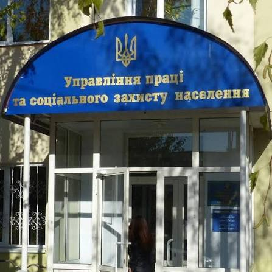
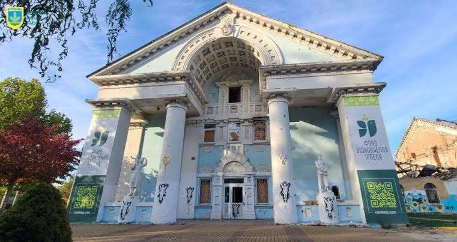

Напрями діяльності установи
Напрямів діяльності за таким запитом не знайдено.
-
1. Відбудова інфраструктури та будівництво
Коротке повідомлення: Реалізація програм відновлення пошкоджених житлових будинків та соціальних об'єктів. Проектування нових укриттів.
Зв'язок з державними органами влади: Міністерство розвитку громад, територій та інфраструктури України.
-
2. Соціальний захист населення

Коротке повідомлення: Надання соціальних гарантій внутрішньо переміщеним особам, ветеранам війни та багатодітним сім'ям.
Зв'язок з державними органами влади: Міністерство соціальної політики України.
-
3. Освіта та культура

Коротке повідомлення: Організація навчального процесу в умовах воєнного стану, забезпечення шкільних автобусів та укриттів у закладах освіти.
Зв'язок з державними органами влади: Міністерство освіти і науки України.